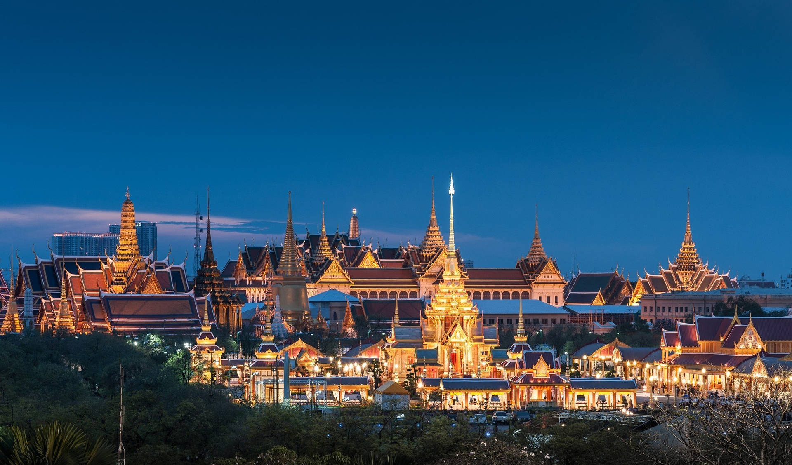

Best places to vistit
Right Now!!!!!

Eiffel Tower: Paris, France
The Eiffel Tower can be appreciated at a distance by all Paris visitors, but for a unique experience consider booking a tour. Completed for the 1889 Exposition Universelle after two years of construction, it has 1,665 steps to the top and elevators to two observation levels. Computer programmed beacons, which can be seen from up to 50 miles away, complement the tower's 20,000 lightbulbs as part of a thrilling, hourly night show. To enjoy Paris with a view, visit the Champagne Bar at The Top for an unforgettable glass of bubbly, or have a chef-prepared meal at Madame Brasserie. Paris is home to some of the world's best hotels, but for a room with an Eiffel Tower view, consider the traveler-approved Shangri-La Hotel, Paris.
Best places to vistit
Right Now!!!!!

Grand Palace: Bangkok, Thailand
Formerly a palace for Kings Rama I through Rama V, and home to Wat Phra Kaeo, the Temple of the Emerald Buddha, today's ceremonial royal complex is a top attraction in Bangkok. Allow at least half a day to admire the ornate carvings, gilded teak woodwork, tiles and classic architecture of the palace's three courtyards, and see the temple interior. Visitors to the Grand Palace must dress appropriately with both shoulders and knees covered, and are asked to wear black or white out of respect for the late King Rama IX, who died in 2016. For a personalized experience, book a customized tour of the palace and Bangkok's must-sees, including the Temple of the Reclining Buddha across the street. The Siam, a traveler-endorsed hotel, has two restaurants, a marina and a full-service spa.
Best places to vistit
Right Now!!!!!

Mount Fuji: Shizuoka, Japan
Often capped with snow, Mount Fuji's gently sloping volcano is Japan's definition of perfection. Revered by locals, the 12,388-foot summit is open to hikers in certain seasons. Most visitors opt for a sighting, either from Tokyo's sky-high observation decks or a passing bullet train heading to Osaka. For a closer view, visit the Fuji Five Lakes region for its hot springs or to begin your hike of Mount Fuji. Views from here are best in the early morning or late afternoon, between November and May. Meanwhile, skiers may want to visit during the winter months. For one-of-a-kind views, go to Oshino Hakkai, which is a series of eight ponds fed by the mountain's underground reservoir amid wooden bridges and rambling walkways in the Mount Fuji World Heritage Site.